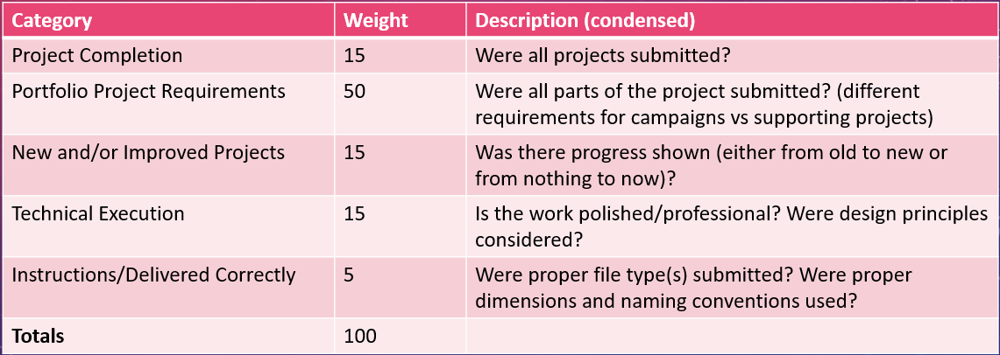
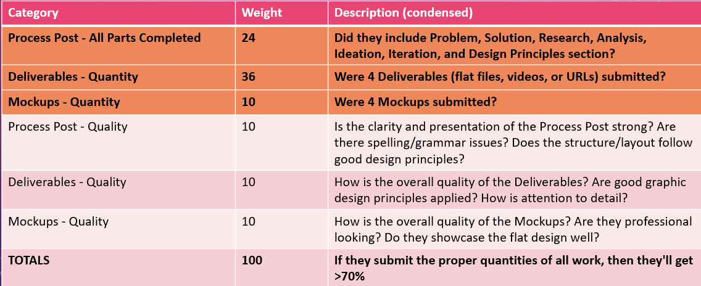
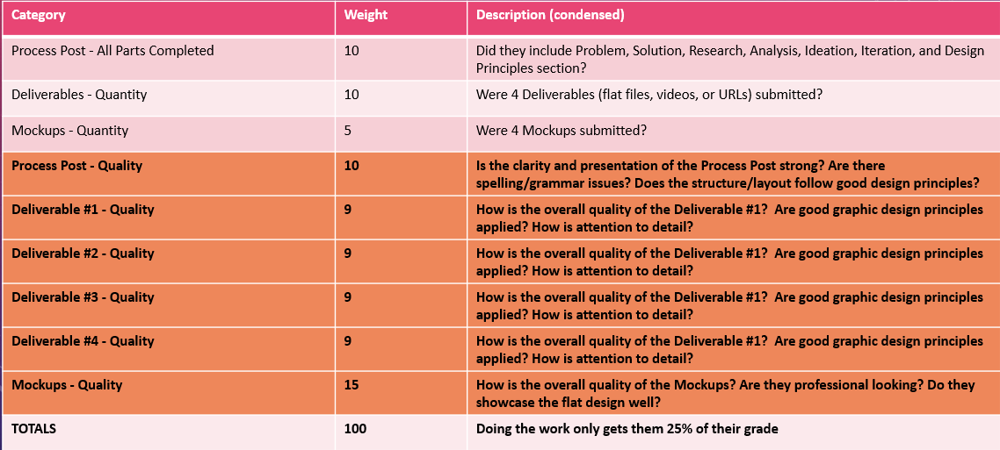
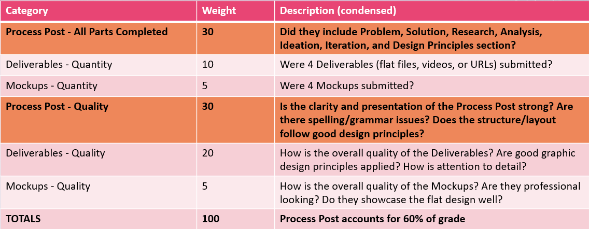
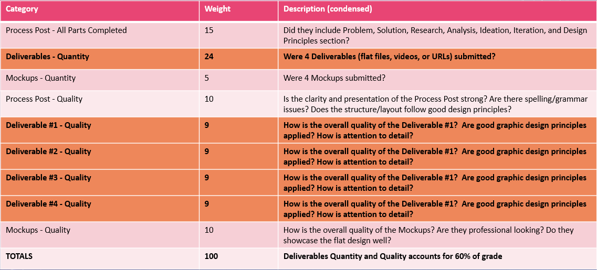
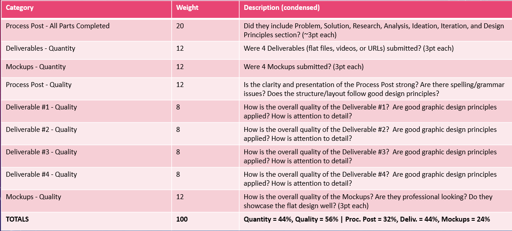
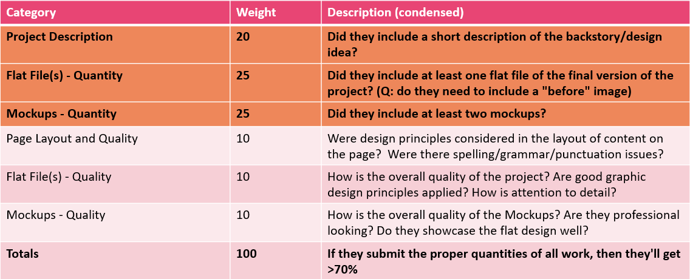
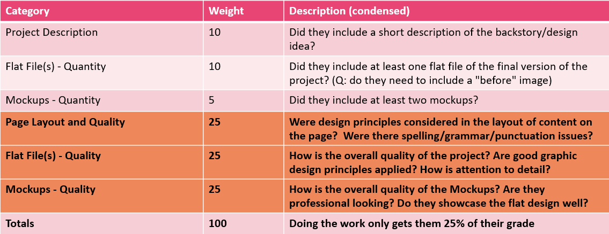
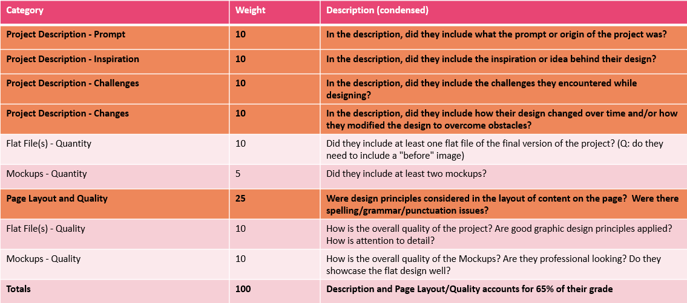
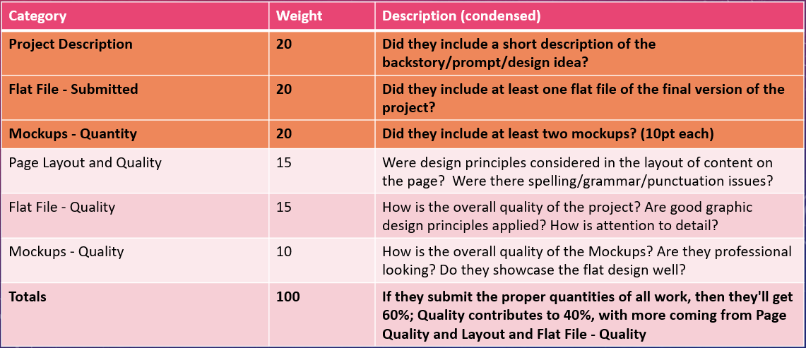

For the Campaign Projects, which of the following rubrics do you think we should use to grade them?
(To be clear, we're referring to grading the project as a whole as it appears on their Portfolio Sites, including their Process Post, Deliverables, Mockups...the whole shebang)






For the Supporting Projects, which of the following rubrics do you think we should use to grade them?
(To be clear, we're referring to grading the project as a whole as it appears on their Portfolio Sites, including their description, the flat file(s), the mockups, and the overall layout on the site)



